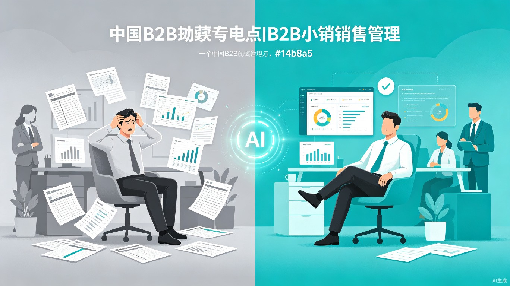
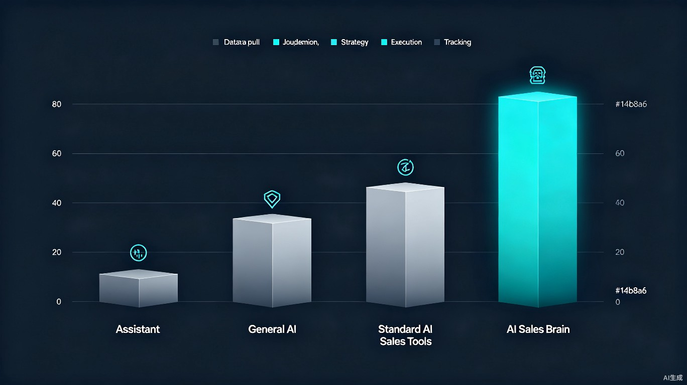
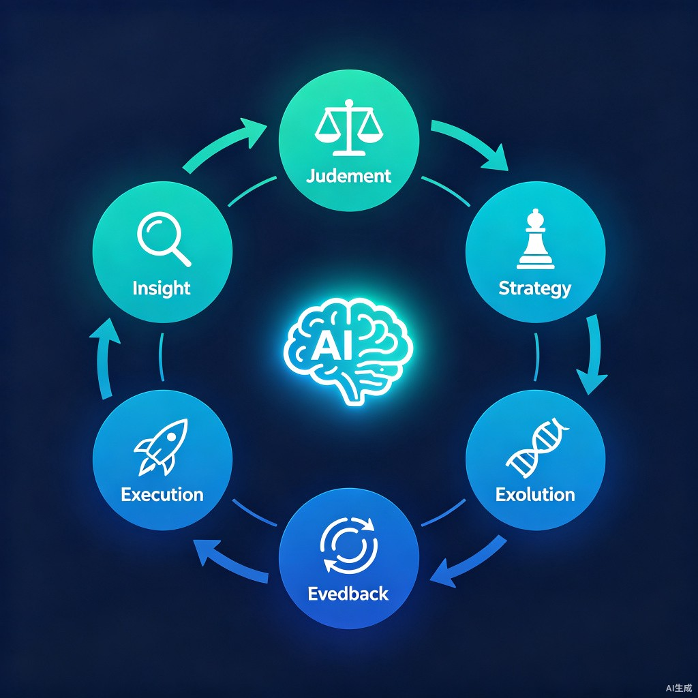
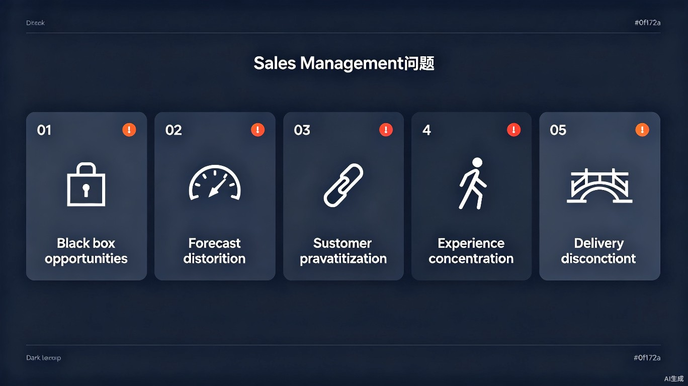
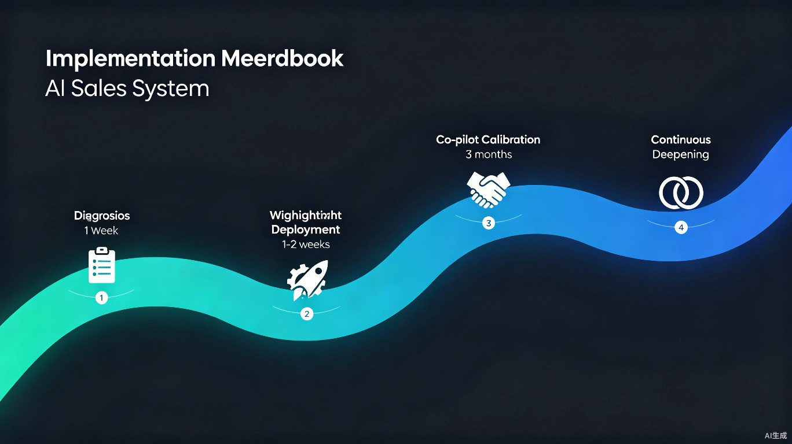

中国中小 B2B 企业的规模化瓶颈，很少是市场不够大、产品不够好——多数时候，是销售管理本身。优秀的判断力装在个人脑子里，人一走就散了，公司的增长上限被绑在少数几个人身上。

销售说"快签了"，但客户那边谁在决策？进度靠销售"感觉不错"，还是有客户签字的硬证据？某阶段停留超正常周期1.5倍，该亮红牌强制复盘。
漏斗里的钱够不够完成目标？赢单率是静态死数字，还是随客户行为动态修正？预成交名单里的"铁单"真的铁吗？
大客户是单线对接还是网状对接？核心客户关系高度集中在一两个人（甚至老板自己）手上，人员流动即意味着关系流失。
20% 的人扛 80% 的业绩，走一个就瘫一条线？管理判断标准全靠老板个人记忆，无法沉淀、无法复制给新人。
助理帮你省时间，但无法帮你省下决策的精力；豆包能给建议，但看不见你的数据、不记得上周说了什么；市面上的"AI销售工具"，帮的是销售个人，不是老板。不做销售助手，做你的销售军师。
| 能力 | 助理 | 通用AI（豆包等） | 一般AI销售工具 | AI销售大脑 |
|---|---|---|---|---|
| 拉数据、整理报表 | ✓ | 需你手动喂 | ✓ | ✓ |
| 判断"哪里有问题" | - | 泛泛的 | 偏个人效率 | 基于你的真实数据 |
| 诊断"为什么有问题" | - | 泛泛的 | - | 带量化标准 |
| 处方"该怎么处理" | - | 泛泛的 | - | 可执行调令 |
| 主动来找你汇报 | - | - | - | ✓ |
| 追踪是否执行 | - | - | - | ✓ |
| 敢跟你唱反调 | - | - | - | ✓ |

接入企业经营数据（CRM导出、飞书多维表格等），每周自动跑一遍完整的诊断-判断-策略-执行-反馈-进化闭环。它会越用越懂你。
转化率、老化商机、异常波动，每周主动摊在你面前，不用你去问。
给你一份不带业绩压力、不怕报坏消息的第二意见——同一单，销售解读成"快签了"，AI军师解读"45天无客户行为证据，该移出预测"。
告诉你该盯哪几单、该找谁谈，而不是一份看完就忘的报告。
调令不是"加强跟进"这种正确的废话，是能立刻执行的动作，比如"华南刘洋3单超30天无证据，本周补证据，否则移出预测"。
行动有没有落地，下一周自动回来对账，不会不了了之。
这一轮的判断标准，会沉淀成下一轮更懂你公司的基础——用得越久，越了解你的业务，这份积累别人拿不走，也换不掉。

以下能力已经上线运行，不是路线图上的规划。接入销售数据后，AI销售大脑即可为你提供完整的自动化销售管理闭环。
AI销售大脑每周主动分析数据进展，把现状、问题和建议主动推送给你——你不用打开系统去看，它会来找你。
针对给出的判断，AI销售大脑会把任务布置、分配到具体的销售名下，并主动跟进执行情况——不是一份看完就忘的报告。
销售会议自动形成纪要并直接分派任务——省掉会后手动整理、事后追问"上次说了要做什么"的环节。
所有会议记录、拜访记录、沉淀下来的销售技巧，都在构建专属于你企业的知识库——这正是护城河，是每天在真实发生的积累。
不必等到每周诊断，AI销售大脑可无感切换到顾问模式，基于沉淀的最佳实践直接回答你的疑问。
可接入 DeepSeek、通义千问、智谱 GLM 等 OpenAI 兼容主流模型，按企业合规要求选型。核心价值在"眼睛、记忆、手脚"，不只是"大脑"。
我们不打算用一套照搬硅谷的理论包装这件事。在中国市场，西方传统理论直接套用，大概率水土不服。AI销售大脑的方法论，是从真实业务里打磨出来的。
在中国市场，源自西方的系统预设理性采购流程，中国则主要靠关系和圈子；西方CRM方法论预设销售靠标准打法，中国靠资源型销售；西方领导力理论预设职业经理人市场成熟，中国的销售管理者难招、难留、难信任。
AI销售大脑的思维方式和方法论，不是从书本上抄来的。创始人曾亲自带过一家成长型企业，把业绩做到3倍增长；也辅导过其他企业重塑营销体系。这套方法论背后，还有对上百家中国B2B企业真实经营打法的持续研究——不是舶来品，是看着本土企业真实的路数总结出来的。
以下不是"销售团队的问题"，是每天在悄悄出血的管理失控点。曾经你需要一个CRM、一个市场团队、一个专职项目经理，并且每周亲力亲为——现在，AI销售大脑都替你干了，而且是7x24小时。

销售说"快签了"，但客户那边谁在决策？进度靠销售"感觉不错"，还是有硬证据？某阶段停留超正常周期1.5倍，该亮红牌强制复盘。
漏斗里的钱够不够完成目标？赢单率是静态死数字，还是随客户行为动态修正？预成交名单里的"铁单"真的铁吗？
大客户是单线对接还是网状对接？销售离职，新销售能不能无感交接？核心客户关系高度集中在一两个人（甚至老板自己）手上。
20%的人扛80%的业绩，走一个就瘫一条线？你有没有早预警机制，而不是等离职通知才慌？
销售为了拿单联合客户逼技术妥协？合同签完销售撤退，交付接盘无底洞条款？
创始人本人会深度参与诊断和调优过程，不是标准化流水线服务。你得到的不只是一个工具，是"AI持续盯盘 + 创始人本人的战略判断"这个组合。

1周内
基于你现有的销售数据，远程完成，交付一份《商机健康度诊断报告》。目的是先看这套逻辑跟你的业务对不对得上。
1-2周
接入数据源（CRM导出/飞书多维表格），配置企业画像和判断标准，AI销售大脑正式接入，团队开始收到每周诊断和调令。
前3个月
创始人本人参与每月复盘，校准判断准确率和行动建议落地率，根据真实反馈持续调整判断逻辑。
长期
视合作深度，提供更定制化的方法论沉淀、更高频的校准沟通，AI系统越用越懂你公司。
AI销售大脑不是又一个让销售个人更高效的工具，而是站在老板视角、把优秀管理判断力变成可持续系统的关键基础设施。
AI销售大脑把原本需要老板每周亲力亲为、逐单核查的判断工作自动化——每周主动完成数据诊断、生成可执行的处理建议并直接分派追踪，销售会议自动形成纪要与待办。将老板原本消耗在"从零判断"上的时间和精力，转化为"审阅判断"，大幅释放本该留给战略决策的管理带宽。
中国有大量正处于规模化转折期的中小B2B企业，普遍面临"管理靠人治、经验难沉淀、规模上不去"的共性瓶颈。AI销售大脑用本土化的判断逻辑，帮助这类企业把优秀的销售管理经验从依赖个人转变为可持续、可复制的系统能力，是推动中国中小企业管理数字化、提升整体竞争力的一次具体实践。
如果你现在是 20-100 人销售团队、已经在用 CRM 或飞书记录商机、并且明确感觉到"看不清真实进度"或者"过度依赖一两个人"——这正是我们想先合作的对象。你会比后来者拿到更投入的服务和更灵活的条件。